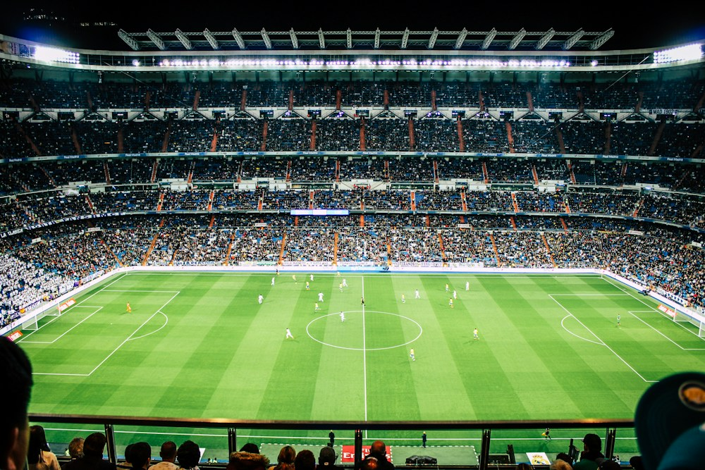

3VS3RITMO ALTO
CALCIO A 3 01 /
LA GABBIA
Pochi metri, tante giocate. Il formato per chi non vuole fermarsi mai.
6 giocatori60 minutiOutdoor
36 €/ campo · 6 € a testa
✳ IL CALCIO DI SEMPRE. IL TUO PROSSIMO MATCH.
Campo, squadra, arbitro e terzo tempo.
La prossima partita si organizza qui.
3 FORMATI. UN’UNICA PASSIONE. DISPONIBILITÀ E PREZZI DI ESEMPIO
01 SCEGLI IL TUO GIOCO
IL CAMPO GIUSTO CAMBIA LA PARTITA.La sfida stretta, il classico tra amici o il campo per pensare in grande. Qui c’è spazio per la tua squadra.
CALCIO A 3 01 /
Pochi metri, tante giocate. Il formato per chi non vuole fermarsi mai.
36 €/ campo · 6 € a testa

5VS5IL GRANDE CLASSICOCALCIO A 5 02 /
La partita della settimana. Quella che inizia nella chat e finisce ai rigori.
60 €/ campo · 6 € a testa
CALCIO A 7 03 /
Allarga il gioco. Per le squadre che hanno ancora un passaggio da inventare.
84 €/ campo · 6 € a testa
Campi, servizi e tariffe illustrano il concept FUORIGIOCO e non rappresentano una struttura reale. Le immagini sono illustrative.
02 PASSA DAL “CI SIAMO?” AL “SI GIOCA”.
PRENOTAZIONE DEMOScegli il formato, trova il tuo orario e prepara la formazione. Tre passaggi, zero messaggi infiniti.
Orari in Italia · Europe/Rome. Disponibilità simulate, non aggiornate in tempo reale.
Pallone gara, luci e spogliatoi inclusi nel concept. Tutti i servizi e i prezzi sono di esempio; non viene effettuato alcun ordine.
03 LA TUA PANCHINA DIGITALE
MATCHDAY HQDal primo “io ci sono” all’ultimo gol. Convoca, schiera, dividi le quote e vivi la partita. Tutto in un posto solo.
Scrivi i nomi o tocca una maglia. Scegli modulo, capitani e portieri.
Le formazioni sono facoltative. Puoi prepararle prima o dopo la simulazione di prenotazione.
Partita tirata, fino alla fine. “Equilibra squadre” usa i livelli da 1 a 5 dei titolari confermati e distribuisce i portieri. I livelli sono indicazioni inserite da te, non valutazioni reali.
La cassa torna. E nessuno deve più chiedere “quanto ti devo?”.
Il ritrovo, le regole del gruppo e tutto quello da mettere nel borsone.
Cronometro, risultato, marcatori e MVP. Il tabellino lo scrivi tu.
Nomi, risultati e quote sono gestiti sul tuo dispositivo. Il salvataggio della bozza è facoltativo. Nessuna prenotazione, ordine, pagamento o comunicazione reale.
04 OLTRE I NOVANTA MINUTI
Il gol all’ultimo, l’amico che arriva in ritardo, la rivincita già promessa. FUORIGIOCO nasce come idea di un club per il calcio che ci piace: semplice, aperto, da vivere insieme.
Si gioca anche la seraNel concept, campi illuminati ogni giorno dalle 09:00 alle 24:00.
Arrivi. Ti cambi. Giochi.Spogliatoi, docce e pallone fanno parte dell’esperienza immaginata.
Il terzo tempo contaUno spazio per ritrovarsi, anche quando finisce la partita.
05 PRIMA DI SCENDERE IN CAMPO
Tutto quello che serve sapere
prima del primo passaggio.
Scegli un campo da 3, 5 o 7 giocatori per squadra, seleziona giorno e orario e continua al riepilogo. Questa è una dimostrazione: la conferma finale non riserva un campo e non invia dati a una struttura.
Le tariffe di esempio per 60 minuti sono 36 € per il calcio a 3, 60 € per il calcio a 5 e 84 € per il calcio a 7. La quota base per 60 minuti è di 6 € a persona con squadre complete. Durate maggiori ed extra aggiornano automaticamente il totale e la quota individuale. Nessun importo viene addebitato.
Il calendario dimostrativo propone partenze ogni mezz’ora dalle 09:00, per partite di 60, 90 o 120 minuti, con termine entro le 24:00. Uno slot è disponibile solo se l’intera durata è libera. Gli orari sono nel fuso Europe/Rome. Puoi esplorare i prossimi 60 giorni; gli slot grigi simulano orari già occupati.
In questa demo non viene creata alcuna prenotazione reale, quindi non serve annullarla. Puoi chiudere il riepilogo o scegliere “Scegli un altro orario” per ricominciare. Le tue formazioni restano disponibili nella bozza.
Per una partita su erba sintetica sono consigliate scarpe adatte al fondo, abbigliamento sportivo e acqua. I servizi mostrati sono parte del concept: per una struttura reale andrebbero confermati prima della partita.
Sì. Puoi copiare la convocazione, scaricare il report e la grafica delle formazioni. Attivando “Salva su questo dispositivo”, la bozza viene conservata solo nel tuo browser. Non esiste una sincronizzazione tra giocatori e nessun messaggio viene inviato automaticamente.
No. Il registro delle quote è un promemoria locale dimostrativo. Spuntare un giocatore non effettua un pagamento, non verifica un incasso e non genera ricevute fiscali.
HAI UN TORNEO IN MENTE?
LA SQUADRA COMINCIA DA UN’IDEA.Eventi, tornei o una semplice domanda.
Prova il nostro modulo di contatto.